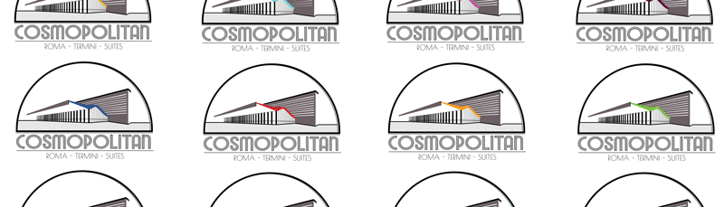
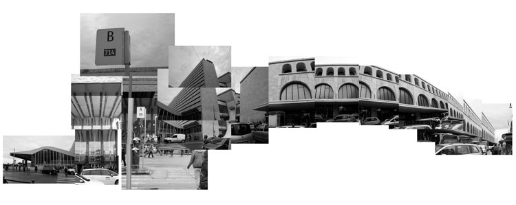
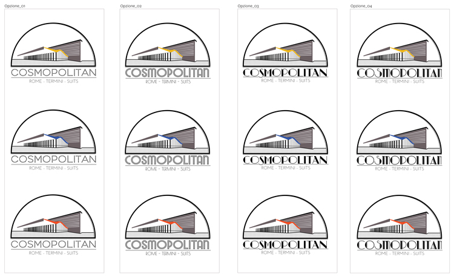
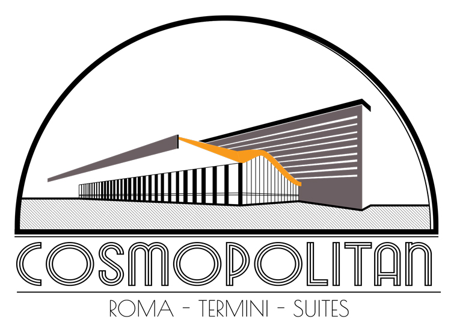

Graphic Design
Private client, design of logo for a guesthouse located in Rome, Italy, close to the Termini station.

01. Initial Studies. Termini Station, Rome, Italy
Facade Collage. Designed in 1950 by Montuori Vitellozzi, Termini is an iconic example of Italian rationalism with clear and functional forms, merging with more classical forms. The client wanted to establish a link between these curves and its guesthouse, recalling the 1930s, when the original project started.

02. Colors and Font
The geometry was simplified to its pure form. The addition of color for its iconic curve adds a dynamic element to the composition. The font was study to resemble 1930s signs.

03. Final Design